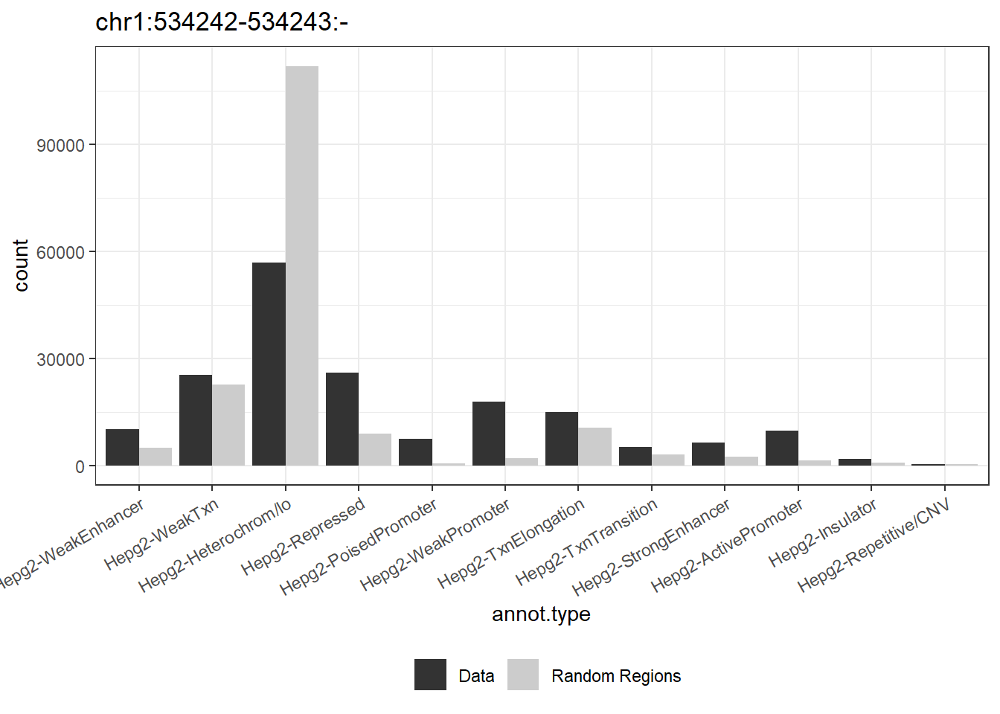

methylation plots
Reka_Toth
22 June, 2023
Last updated: 2023-06-22
Checks: 7 0
Knit directory: ROmics/
This reproducible R Markdown analysis was created with workflowr (version 1.7.0.4). The Checks tab describes the reproducibility checks that were applied when the results were created. The Past versions tab lists the development history.
Great! Since the R Markdown file has been committed to the Git repository, you know the exact version of the code that produced these results.
Great job! The global environment was empty. Objects defined in the global environment can affect the analysis in your R Markdown file in unknown ways. For reproduciblity it’s best to always run the code in an empty environment.
The command set.seed(20230606) was run prior to running
the code in the R Markdown file. Setting a seed ensures that any results
that rely on randomness, e.g. subsampling or permutations, are
reproducible.
Great job! Recording the operating system, R version, and package versions is critical for reproducibility.
Nice! There were no cached chunks for this analysis, so you can be confident that you successfully produced the results during this run.
Great job! Using relative paths to the files within your workflowr project makes it easier to run your code on other machines.
Great! You are using Git for version control. Tracking code development and connecting the code version to the results is critical for reproducibility.
The results in this page were generated with repository version 301865d. See the Past versions tab to see a history of the changes made to the R Markdown and HTML files.
Note that you need to be careful to ensure that all relevant files for
the analysis have been committed to Git prior to generating the results
(you can use wflow_publish or
wflow_git_commit). workflowr only checks the R Markdown
file, but you know if there are other scripts or data files that it
depends on. Below is the status of the Git repository when the results
were generated:
Ignored files:
Ignored: .Rhistory
Ignored: .Rproj.user/
Untracked files:
Untracked: Course_plans.docx
Untracked: data/idat/
Untracked: data/mm9_Refseq_chr12.tsv
Untracked: data/normalized_rnb.set.RDS
Untracked: data/raw_rnb.set.RDS
Untracked: data/raw_rnbset_GSE175758.RDS
Untracked: data/sample_annotation.csv
Untracked: output/Genomic data.pptx
Untracked: output/diffmeth/
Unstaged changes:
Modified: analysis/GRanges.Rmd
Modified: analysis/reproducible_programming.Rmd
Modified: code/region_annotation_function.R
Note that any generated files, e.g. HTML, png, CSS, etc., are not included in this status report because it is ok for generated content to have uncommitted changes.
These are the previous versions of the repository in which changes were
made to the R Markdown (analysis/methylation_plots.Rmd) and
HTML (docs/methylation_plots.html) files. If you’ve
configured a remote Git repository (see ?wflow_git_remote),
click on the hyperlinks in the table below to view the files as they
were in that past version.
| File | Version | Author | Date | Message |
|---|---|---|---|---|
| Rmd | 301865d | tkik | 2023-06-22 | wflow_publish("analysis/methylation_plots.Rmd") |
Introduction
library(RnBeads)Loading required package: BiocGenerics
Attaching package: 'BiocGenerics'The following objects are masked from 'package:stats':
IQR, mad, sd, var, xtabsThe following objects are masked from 'package:base':
anyDuplicated, aperm, append, as.data.frame, basename, cbind,
colnames, dirname, do.call, duplicated, eval, evalq, Filter, Find,
get, grep, grepl, intersect, is.unsorted, lapply, Map, mapply,
match, mget, order, paste, pmax, pmax.int, pmin, pmin.int,
Position, rank, rbind, Reduce, rownames, sapply, setdiff, sort,
table, tapply, union, unique, unsplit, which.max, which.minLoading required package: S4VectorsLoading required package: stats4
Attaching package: 'S4Vectors'The following objects are masked from 'package:base':
expand.grid, I, unnameLoading required package: GenomicRangesLoading required package: IRanges
Attaching package: 'IRanges'The following object is masked from 'package:grDevices':
windowsLoading required package: GenomeInfoDbLoading required package: MASSLoading required package: clusterLoading required package: ffLoading required package: bit
Attaching package: 'bit'The following object is masked from 'package:base':
xorAttaching package ff- getOption("fftempdir")=="C:/Users/rtoth/AppData/Local/Temp/Rtmp2NNmid/ff"- getOption("ffextension")=="ff"- getOption("ffdrop")==TRUE- getOption("fffinonexit")==TRUE- getOption("ffpagesize")==65536- getOption("ffcaching")=="mmnoflush" -- consider "ffeachflush" if your system stalls on large writes- getOption("ffbatchbytes")==16777216 -- consider a different value for tuning your system- getOption("ffmaxbytes")==536870912 -- consider a different value for tuning your system
Attaching package: 'ff'The following objects are masked from 'package:utils':
write.csv, write.csv2The following objects are masked from 'package:base':
is.factor, is.orderedLoading required package: fieldsLoading required package: spamSpam version 2.9-1 (2022-08-07) is loaded.
Type 'help( Spam)' or 'demo( spam)' for a short introduction
and overview of this package.
Help for individual functions is also obtained by adding the
suffix '.spam' to the function name, e.g. 'help( chol.spam)'.
Attaching package: 'spam'The following object is masked from 'package:stats4':
mleThe following objects are masked from 'package:base':
backsolve, forwardsolveLoading required package: viridisLoading required package: viridisLite
Try help(fields) to get started.Loading required package: ggplot2Loading required package: gplots
Attaching package: 'gplots'The following object is masked from 'package:IRanges':
spaceThe following object is masked from 'package:S4Vectors':
spaceThe following object is masked from 'package:stats':
lowessLoading required package: grid
Attaching package: 'grid'The following object is masked from 'package:ff':
patternLoading required package: gridExtra
Attaching package: 'gridExtra'The following object is masked from 'package:BiocGenerics':
combineLoading required package: limma
Attaching package: 'limma'The following object is masked from 'package:BiocGenerics':
plotMALoading required package: matrixStatsLoading required package: illuminaioLoading required package: methylumiLoading required package: BiobaseWelcome to Bioconductor
Vignettes contain introductory material; view with
'browseVignettes()'. To cite Bioconductor, see
'citation("Biobase")', and for packages 'citation("pkgname")'.
Attaching package: 'Biobase'The following objects are masked from 'package:matrixStats':
anyMissing, rowMediansLoading required package: scales
Attaching package: 'scales'The following object is masked from 'package:viridis':
viridis_palLoading required package: reshape2Loading required package: FDb.InfiniumMethylation.hg19Loading required package: GenomicFeaturesLoading required package: AnnotationDbi
Attaching package: 'AnnotationDbi'The following object is masked from 'package:MASS':
selectLoading required package: TxDb.Hsapiens.UCSC.hg19.knownGeneLoading required package: org.Hs.eg.dbLoading required package: minfiLoading required package: SummarizedExperimentLoading required package: MatrixGenerics
Attaching package: 'MatrixGenerics'The following object is masked from 'package:Biobase':
rowMediansThe following objects are masked from 'package:matrixStats':
colAlls, colAnyNAs, colAnys, colAvgsPerRowSet, colCollapse,
colCounts, colCummaxs, colCummins, colCumprods, colCumsums,
colDiffs, colIQRDiffs, colIQRs, colLogSumExps, colMadDiffs,
colMads, colMaxs, colMeans2, colMedians, colMins, colOrderStats,
colProds, colQuantiles, colRanges, colRanks, colSdDiffs, colSds,
colSums2, colTabulates, colVarDiffs, colVars, colWeightedMads,
colWeightedMeans, colWeightedMedians, colWeightedSds,
colWeightedVars, rowAlls, rowAnyNAs, rowAnys, rowAvgsPerColSet,
rowCollapse, rowCounts, rowCummaxs, rowCummins, rowCumprods,
rowCumsums, rowDiffs, rowIQRDiffs, rowIQRs, rowLogSumExps,
rowMadDiffs, rowMads, rowMaxs, rowMeans2, rowMedians, rowMins,
rowOrderStats, rowProds, rowQuantiles, rowRanges, rowRanks,
rowSdDiffs, rowSds, rowSums2, rowTabulates, rowVarDiffs, rowVars,
rowWeightedMads, rowWeightedMeans, rowWeightedMedians,
rowWeightedSds, rowWeightedVarsLoading required package: BiostringsLoading required package: XVector
Attaching package: 'Biostrings'The following object is masked from 'package:grid':
patternThe following objects are masked from 'package:ff':
mismatch, patternThe following object is masked from 'package:base':
strsplitLoading required package: bumphunterLoading required package: foreachLoading required package: iteratorsLoading required package: parallelLoading required package: locfitlocfit 1.5-9.7 2023-01-02Setting options('download.file.method.GEOquery'='auto')Setting options('GEOquery.inmemory.gpl'=FALSE)Loading required package: plyr
Attaching package: 'plyr'The following object is masked from 'package:XVector':
compactThe following object is masked from 'package:matrixStats':
countThe following object is masked from 'package:IRanges':
descThe following object is masked from 'package:S4Vectors':
renamelibrary(ggplot2)
library(ggfortify)
Attaching package: 'ggfortify'The following object is masked from 'package:fields':
unscalelibrary(ggsci)
library(ggrepel)
library(ggrastr)
library(ComplexHeatmap)========================================
ComplexHeatmap version 2.14.0
Bioconductor page: http://bioconductor.org/packages/ComplexHeatmap/
Github page: https://github.com/jokergoo/ComplexHeatmap
Documentation: http://jokergoo.github.io/ComplexHeatmap-reference
If you use it in published research, please cite either one:
- Gu, Z. Complex Heatmap Visualization. iMeta 2022.
- Gu, Z. Complex heatmaps reveal patterns and correlations in multidimensional
genomic data. Bioinformatics 2016.
The new InteractiveComplexHeatmap package can directly export static
complex heatmaps into an interactive Shiny app with zero effort. Have a try!
This message can be suppressed by:
suppressPackageStartupMessages(library(ComplexHeatmap))
========================================library(dplyr)
Attaching package: 'dplyr'The following objects are masked from 'package:plyr':
arrange, count, desc, failwith, id, mutate, rename, summarise,
summarizeThe following object is masked from 'package:methylumi':
combineThe following object is masked from 'package:minfi':
combineThe following objects are masked from 'package:Biostrings':
collapse, intersect, setdiff, setequal, unionThe following object is masked from 'package:XVector':
sliceThe following object is masked from 'package:AnnotationDbi':
selectThe following object is masked from 'package:Biobase':
combineThe following object is masked from 'package:matrixStats':
countThe following object is masked from 'package:gridExtra':
combineThe following object is masked from 'package:bit':
symdiffThe following object is masked from 'package:MASS':
selectThe following objects are masked from 'package:GenomicRanges':
intersect, setdiff, unionThe following object is masked from 'package:GenomeInfoDb':
intersectThe following objects are masked from 'package:IRanges':
collapse, desc, intersect, setdiff, slice, unionThe following objects are masked from 'package:S4Vectors':
first, intersect, rename, setdiff, setequal, unionThe following objects are masked from 'package:BiocGenerics':
combine, intersect, setdiff, unionThe following objects are masked from 'package:stats':
filter, lagThe following objects are masked from 'package:base':
intersect, setdiff, setequal, unionlibrary(circlize)========================================
circlize version 0.4.15
CRAN page: https://cran.r-project.org/package=circlize
Github page: https://github.com/jokergoo/circlize
Documentation: https://jokergoo.github.io/circlize_book/book/
If you use it in published research, please cite:
Gu, Z. circlize implements and enhances circular visualization
in R. Bioinformatics 2014.
This message can be suppressed by:
suppressPackageStartupMessages(library(circlize))
========================================library(tibble)
library(clusterProfiler)clusterProfiler v4.6.2 For help: https://yulab-smu.top/biomedical-knowledge-mining-book/
If you use clusterProfiler in published research, please cite:
T Wu, E Hu, S Xu, M Chen, P Guo, Z Dai, T Feng, L Zhou, W Tang, L Zhan, X Fu, S Liu, X Bo, and G Yu. clusterProfiler 4.0: A universal enrichment tool for interpreting omics data. The Innovation. 2021, 2(3):100141
Attaching package: 'clusterProfiler'The following objects are masked from 'package:plyr':
arrange, mutate, rename, summariseThe following object is masked from 'package:XVector':
sliceThe following object is masked from 'package:AnnotationDbi':
selectThe following object is masked from 'package:MASS':
selectThe following object is masked from 'package:IRanges':
sliceThe following object is masked from 'package:S4Vectors':
renameThe following object is masked from 'package:stats':
filterlibrary(ChIPseeker)ChIPseeker v1.34.1 For help: https://guangchuangyu.github.io/software/ChIPseeker
If you use ChIPseeker in published research, please cite:
Qianwen Wang, Ming Li, Tianzhi Wu, Li Zhan, Lin Li, Meijun Chen, Wenqin Xie, Zijing Xie, Erqiang Hu, Shuangbin Xu, Guangchuang Yu. Exploring epigenomic datasets by ChIPseeker. Current Protocols 2022, 2(10): e585
Attaching package: 'ChIPseeker'The following object is masked from 'package:plyr':
.library(annotatr)
library(rtracklayer)
library(TxDb.Mmusculus.UCSC.mm10.knownGene)
library(org.Mm.eg.db)library(DOSE)DOSE v3.24.2 For help: https://yulab-smu.top/biomedical-knowledge-mining-book/
If you use DOSE in published research, please cite:
Guangchuang Yu, Li-Gen Wang, Guang-Rong Yan, Qing-Yu He. DOSE: an R/Bioconductor package for Disease Ontology Semantic and Enrichment analysis. Bioinformatics 2015, 31(4):608-609library(enrichplot)
library(plotly)
Attaching package: 'plotly'The following object is masked from 'package:rtracklayer':
exportThe following object is masked from 'package:ComplexHeatmap':
add_heatmapThe following objects are masked from 'package:plyr':
arrange, mutate, rename, summariseThe following object is masked from 'package:XVector':
sliceThe following object is masked from 'package:AnnotationDbi':
selectThe following object is masked from 'package:ggplot2':
last_plotThe following object is masked from 'package:MASS':
selectThe following object is masked from 'package:IRanges':
sliceThe following object is masked from 'package:S4Vectors':
renameThe following object is masked from 'package:stats':
filterThe following object is masked from 'package:graphics':
layoutlibrary(ReactomePA)ReactomePA v1.42.0 For help: https://yulab-smu.top/biomedical-knowledge-mining-book/
If you use ReactomePA in published research, please cite:
Guangchuang Yu, Qing-Yu He. ReactomePA: an R/Bioconductor package for reactome pathway analysis and visualization. Molecular BioSystems 2016, 12(2):477-479rnb.options(identifiers.column="Sample_ID",
disk.dump.big.matrices = FALSE)
mypal = pal_d3("category20")(20)
mypal2 <- pal_ucscgb()(4) # for red (1), for green (4)
continous_pal <- pal_d3("category20c")(20)
Cellpaper <- c("#313695","#4575b4", "#74add1", "#abd9e9","#e0f3f8","#ffffbf","#fee090","#fdae61","#f46d43","#d73027","#a50026")
rnb.set <- readRDS("data/normalized_rnb.set.RDS")
source(file.path("code", "region_annotation_function.R"))pr.res <- rnb.execute.dreduction(rnb.set)Calculated MDS coordinates using manhattan distanceCalculated MDS coordinates using euclidean distanceRemoved 756 loci ( sites ) because they contain missing valuesresults <- as.data.frame(cbind(pr.res$pca$x, anno = pheno(rnb.set)))
ggplotly(ggplot(results)+geom_point(aes(PC1, PC2, color=anno.Sample_Group, shape=anno.Replicate), size=3)+theme_bw()+scale_color_d3(), ggtitle="PC1 vs. PC2")ggplotly(ggplot(results)+geom_point(aes(PC2, PC3, color=anno.Sample_Group, shape=anno.Replicate), size=3)+theme_bw()+scale_color_d3(), ggtitle="PC2 vs. PC3")ggplotly(ggplot(results)+geom_point(aes(PC1, PC3, color=anno.Sample_Group, shape=anno.Replicate), size=3)+theme_bw()+scale_color_d3(), ggtitle="PC1 vs. PC3")Annotation of differentially methylated sites
load("output/diffmeth/differential_methylation_data/differential_rnbDiffMeth/rnbDiffMeth.RData")
result <- as.data.frame(object@sites$`DKO vs. WT (based on Sample_Group)`)
result <- cbind(as.data.frame(RnBeads::annotation(rnb.set)), result)
result$Type <-
ifelse(
result$diffmeth.p.adj.fdr >= 0.05 |
abs(result$mean.diff) < 0.2,
"not altered",
ifelse(
result$mean.diff > 0,
"Hypermethylated",
"Hypomethylated"
)
)
p <-
ggplot(result, aes(x = mean.diff, y = -log10(diffmeth.p.adj.fdr))) +
geom_point(aes(fill = Type, color = Type)) + theme_bw() + scale_color_manual(values = c(
"Hypermethylated" = alpha(mypal2[1], 0.6),
"Hypomethylated" = alpha(mypal2[4], 0.6),
"not altered" = alpha("black", 0.5)
)) + theme(legend.position = "none", text = element_text(size = 12)) + xlim(-1, 1) +
geom_vline(xintercept = c(-0.2, 0.2), linetype = "longdash") +
geom_hline(yintercept = c(-log10(0.05)), linetype = "longdash") + labs(x =
"Mean difference", y = "-log10(FDR p)", title = "DKO vs. WT")
panno <- pheno(rnb.set)
rownames(anno) <- anno$Sample_ID
mat <- meth(rnb.set, row.names=T)
mat <- mat[which(result$Type != "not altered"), ,drop=F]
plot_mat <- mat[complete.cases(mat),]
if (nrow(plot_mat)>20000)
plot_mat <- plot_mat[sample(1:nrow(plot_mat), 20000),]
p <- pheatmap::pheatmap(plot_mat, annotation_col = anno[,c("Sample_Group", "Replicate")], colorRampPalette(Cellpaper, space = "rgb")(10), main = "DKO vs. WT", show_rownames = FALSE)
p data <- list()
data[["hypo"]] <- makeGRangesFromDataFrame(result[result$Type=="Hypomethylated",], keep.extra.columns = T)
data[["hyper"]]<- makeGRangesFromDataFrame(result[result$Type=="Hypermethylated",], keep.extra.columns = T)
annots = c('hg19_Hepg2-chromatin')
annots_gr = build_annotations(genome = 'hg19', annotations = annots)Building hmms...Downloading chromHMM track for Hepg2for (dataset in data){
genome(dataset) <- rep("hg19", length(genome(dataset)))
result <- annotate_regions(dataset, annotations=annots_gr, minoverlap = 1L, ignore.strand = TRUE, quiet = FALSE)
rnd_annots = annotate_regions(regions = randomize_regions(dataset),annotations = annots_gr,ignore.strand = TRUE)
p_annots = plot_annotation(annotated_regions = result, annotated_random = rnd_annots)
print(p_annots+ggtitle(dataset))
}Annotating...Randomizing regions...Annotating...
Annotating...Randomizing regions...Annotating...
background <- makeGRangesFromDataFrame(as.data.frame(RnBeads::annotation(rnb.set)))
genome(background) <- rep("hg19", length(genome(background)))
for (dataset in names(data)){
genome(data[[dataset]]) <- rep("hg19", length(genome(data[[dataset]])))
background2 <- background[sample(1:length(background), length(data[[dataset]])),]
result <- annotate_regions(data[[dataset]], annotations=annots_gr, minoverlap = 1L, ignore.strand = TRUE, quiet = FALSE)
rnd_annots = annotate_regions(regions = background2,annotations = annots_gr,ignore.strand = TRUE)
p_annots = plot_annotation(annotated_regions = result, annotated_random = rnd_annots)
print(p_annots+ggtitle(dataset))
}Annotating...
Annotating...
Annotating...
Annotating...## loading packages
txdb <- TxDb.Hsapiens.UCSC.hg19.knownGene
hs <- org.Hs.eg.db
peakAnnoList <- lapply(data, annotatePeak, TxDb=txdb,
tssRegion=c(-3000, 500), verbose=FALSE)
for (i in 1:length(peakAnnoList)) {
peakAnnoList[[i]]@anno$symbols <- AnnotationDbi::select(hs,
keys = peakAnnoList[[i]]@anno$geneId,
columns = c("SYMBOL"),
keytype = "ENTREZID")$SYMBOL
}
plotAnnoBar(peakAnnoList) cat("\n")print(plotDistToTSS(peakAnnoList,
title="Distribution of DMLs\nrelative to TSS")) cat("\n")dmls <- list()
dmls[["DKO_vs_WT"]] <- data
names(dmls[["DKO_vs_WT"]]) <- c("up", "down")
plots <- region_annotation_function(dmrs = dmls, annots_gr = annots_gr, genome = "hg19", background = background)'getOption("repos")' replaces Bioconductor standard repositories, see
'help("repositories", package = "BiocManager")' for details.
Replacement repositories:
CRAN: https://cran.rstudio.com/The masked version of 'hg19' is not installed. Using the unmasked version. This means that no automatic masking will be available.Annotating...
Annotating...Counting annotation types in data and random regionsAnnotating...
Annotating...Counting annotation types in data and random regionsWarning: `aes_string()` was deprecated in ggplot2 3.0.0.
ℹ Please use tidy evaluation idioms with `aes()`.
ℹ See also `vignette("ggplot2-in-packages")` for more information.
This warning is displayed once every 8 hours.
Call `lifecycle::last_lifecycle_warnings()` to see where this warning was
generated.`summarise()` has grouped output by 'Comparison', 'direction'. You can override
using the `.groups` argument.print(plots[[1]])print(plots[[2]])Density plots
res <- as.data.frame(object@sites$`DKO vs. WT (based on Sample_Group)`)
res <- cbind(as.data.frame(RnBeads::annotation(rnb.set)), res)
g <- ggplot() +
theme_minimal()+scale_x_continuous(expand = c(0, 0)) +
scale_y_continuous(expand = c(0, 0)) +
theme(legend.position='none')+
#ggnewscale::new_scale_fill() +
geom_bin2d(data=as.data.frame(res), mapping=aes(x= mean.g1, y= mean.g2), bins=200) +
theme_bw()+scale_fill_viridis(option = "viridis", direction = 1)+xlab("Mean beta, group 1")+ylab("Mean beta, group 2") + geom_point(data=as.data.frame(res)[as.data.frame(res)$diffmeth.p.adj.fdr<0.05,], mapping=aes(x= mean.g1, y= mean.g2), colour = "red")
print(g)cat("\n")Gene set enrichment of promoter overlapping DMLs, Reactome
annots = c('hg19_genes_promoters')
annots_gr_orig = build_annotations(genome = 'hg19', annotations = annots)'select()' returned 1:1 mapping between keys and columnsBuilding promoters... regions_bg <- subsetByOverlaps(annots_gr_orig, background, ignore.strand=TRUE)
regions <- subsetByOverlaps(annots_gr_orig, data$hypo, ignore.strand=TRUE)
cat("Hypermethylated in group 2:
\n")Hypermethylated in group 2:
if (length(regions)>0){
edo <- enrichPathway(gene=unique(regions$gene_id), pvalueCutoff = 0.05, readable=TRUE, organism = "human", universe = unique(regions_bg$gene_id))
if(!is.null(edo) && sum(edo@result$p.adjust<0.05)>0){
edo <- mutate(edo, qscore = -log(p.adjust, base=10))
p <- barplot(edo, x="qscore", showCategory=10)
g <- dotplot(edo, showCategory=30) + ggtitle("dotplot for ORA")
print(g)
print(p)
#edox <- setReadable(edo, 'org.Mm.eg.db', 'ENTREZID')
p2 <- heatplot(edo)
print(p2)
cat("\n")
}
}
cat("\n") regions <- subsetByOverlaps(annots_gr_orig, data$hyper, ignore.strand=TRUE)
cat("Hypermethylated in group 1:
\n")Hypermethylated in group 1:
if (length(regions)>0){
edo <- enrichPathway(gene=unique(regions$gene_id), pvalueCutoff = 0.05, readable=TRUE, organism = "human", universe = unique(regions_bg$gene_id))
if(!is.null(edo) && sum(edo@result$p.adjust<0.05)>0){
edo <- mutate(edo, qscore = -log(p.adjust, base=10))
p <- barplot(edo, x="qscore", showCategory=10)
g <- dotplot(edo, showCategory=30) + ggtitle("dotplot for ORA")
print(g)
print(p)
p2 <- heatplot(edo)
print(p2)
}
cat("\n")
}Gene set enrichment of promoter overlapping DMLs, msigDB
library(msigdbr)
m_t2g <- msigdbr(species = "Homo sapiens", category = "H") %>%
dplyr::select(gs_name, entrez_gene)
regions <- subsetByOverlaps(annots_gr_orig, data$hypo, ignore.strand=TRUE)
cat("Hypermethylated in group 2:
\n")Hypermethylated in group 2:
if (length(regions)>0){
em <- enricher(regions$gene_id, TERM2GENE=m_t2g)
if(!is.null(em) && sum(em@result$p.adjust<0.05)>0){
em <- mutate(em, qscore = -log(p.adjust, base=10))
p <- barplot(em, x="qscore", showCategory=10)
g <- dotplot(em, showCategory=30) + ggtitle("dotplot for ORA")
print(g)
print(p)
cat("\n")
}
} regions <- subsetByOverlaps(annots_gr_orig, data$hyper, ignore.strand=TRUE)
cat("Hypermethylated in group 1:
\n")Hypermethylated in group 1:
if (length(regions)>0){
em <- enricher(regions$gene_id, TERM2GENE=m_t2g)
if(!is.null(em) && sum(em@result$p.adjust<0.05)>0){
em <- mutate(em, qscore = -log(p.adjust, base=10))
p <- barplot(em, x="qscore", showCategory=10)
g <- dotplot(em, showCategory=30) + ggtitle("dotplot for ORA")
print(g)
print(p)
cat("\n")
}
}
sessionInfo()R version 4.2.3 (2023-03-15 ucrt)
Platform: x86_64-w64-mingw32/x64 (64-bit)
Running under: Windows 10 x64 (build 19042)
Matrix products: default
locale:
[1] LC_COLLATE=English_United States.utf8
[2] LC_CTYPE=English_United States.utf8
[3] LC_MONETARY=English_United States.utf8
[4] LC_NUMERIC=C
[5] LC_TIME=English_United States.utf8
attached base packages:
[1] parallel grid stats4 stats graphics grDevices utils
[8] datasets methods base
other attached packages:
[1] msigdbr_7.5.1
[2] BSgenome.Hsapiens.UCSC.hg19_1.4.3
[3] BSgenome_1.66.3
[4] RnBeads.hg19_1.30.0
[5] ReactomePA_1.42.0
[6] plotly_4.10.2
[7] enrichplot_1.18.4
[8] DOSE_3.24.2
[9] org.Mm.eg.db_3.16.0
[10] TxDb.Mmusculus.UCSC.mm10.knownGene_3.10.0
[11] rtracklayer_1.58.0
[12] annotatr_1.24.0
[13] ChIPseeker_1.34.1
[14] clusterProfiler_4.6.2
[15] tibble_3.1.8
[16] circlize_0.4.15
[17] dplyr_1.1.0
[18] ComplexHeatmap_2.14.0
[19] ggrastr_1.0.2
[20] ggrepel_0.9.3
[21] ggsci_3.0.0
[22] ggfortify_0.4.16
[23] RnBeads_2.16.0
[24] plyr_1.8.8
[25] methylumi_2.44.0
[26] minfi_1.44.0
[27] bumphunter_1.40.0
[28] locfit_1.5-9.7
[29] iterators_1.0.14
[30] foreach_1.5.2
[31] Biostrings_2.66.0
[32] XVector_0.38.0
[33] SummarizedExperiment_1.28.0
[34] MatrixGenerics_1.10.0
[35] FDb.InfiniumMethylation.hg19_2.2.0
[36] org.Hs.eg.db_3.16.0
[37] TxDb.Hsapiens.UCSC.hg19.knownGene_3.2.2
[38] GenomicFeatures_1.50.4
[39] AnnotationDbi_1.60.2
[40] reshape2_1.4.4
[41] scales_1.2.1
[42] Biobase_2.58.0
[43] illuminaio_0.40.0
[44] matrixStats_0.63.0
[45] limma_3.54.1
[46] gridExtra_2.3
[47] gplots_3.1.3
[48] ggplot2_3.4.2
[49] fields_14.1
[50] viridis_0.6.3
[51] viridisLite_0.4.2
[52] spam_2.9-1
[53] ff_4.0.9
[54] bit_4.0.5
[55] cluster_2.1.4
[56] MASS_7.3-58.2
[57] GenomicRanges_1.50.2
[58] GenomeInfoDb_1.34.9
[59] IRanges_2.32.0
[60] S4Vectors_0.36.1
[61] BiocGenerics_0.44.0
[62] workflowr_1.7.0.4
loaded via a namespace (and not attached):
[1] rappdirs_0.3.3 tidyr_1.3.0
[3] bit64_4.0.5 knitr_1.43
[5] DelayedArray_0.23.2 data.table_1.14.8
[7] KEGGREST_1.38.0 RCurl_1.98-1.10
[9] GEOquery_2.66.0 doParallel_1.0.17
[11] generics_0.1.3 preprocessCore_1.60.2
[13] callr_3.7.3 cowplot_1.1.1
[15] RSQLite_2.3.0 shadowtext_0.1.2
[17] tzdb_0.3.0 xml2_1.3.3
[19] httpuv_1.6.6 xfun_0.39
[21] hms_1.1.3 jquerylib_0.1.4
[23] babelgene_22.9 evaluate_0.21
[25] promises_1.2.0.1 fansi_1.0.4
[27] restfulr_0.0.15 scrime_1.3.5
[29] progress_1.2.2 caTools_1.18.2
[31] dbplyr_2.3.2 htmlwidgets_1.6.2
[33] igraph_1.5.0 DBI_1.1.3
[35] reshape_0.8.9 ellipsis_0.3.2
[37] purrr_1.0.1 crosstalk_1.2.0
[39] annotate_1.76.0 biomaRt_2.54.1
[41] sparseMatrixStats_1.10.0 vctrs_0.5.2
[43] cachem_1.0.6 withr_2.5.0
[45] ggforce_0.4.1 HDO.db_0.99.1
[47] vroom_1.6.3 treeio_1.22.0
[49] GenomicAlignments_1.34.0 prettyunits_1.1.1
[51] mclust_6.0.0 lazyeval_0.2.2
[53] ape_5.7-1 dotCall64_1.0-2
[55] crayon_1.5.2 genefilter_1.80.3
[57] labeling_0.4.2 pkgconfig_2.0.3
[59] tweenr_2.0.2 nlme_3.1-162
[61] vipor_0.4.5 rlang_1.1.1
[63] lifecycle_1.0.3 downloader_0.4
[65] filelock_1.0.2 BiocFileCache_2.6.1
[67] AnnotationHub_3.6.0 rprojroot_2.0.3
[69] polyclip_1.10-4 graph_1.76.0
[71] rngtools_1.5.2 base64_2.0.1
[73] Matrix_1.5-3 aplot_0.1.10
[75] boot_1.3-28.1 Rhdf5lib_1.20.0
[77] beeswarm_0.4.0 pheatmap_1.0.12
[79] whisker_0.4.1 GlobalOptions_0.1.2
[81] processx_3.7.0 png_0.1-8
[83] rjson_0.2.21 bitops_1.0-7
[85] gson_0.1.0 getPass_0.2-2
[87] KernSmooth_2.23-20 rhdf5filters_1.10.0
[89] blob_1.2.4 DelayedMatrixStats_1.20.0
[91] doRNG_1.8.6 shape_1.4.6
[93] stringr_1.5.0 qvalue_2.30.0
[95] regioneR_1.30.0 nor1mix_1.3-0
[97] readr_2.1.4 gridGraphics_0.5-1
[99] reactome.db_1.82.0 graphite_1.44.0
[101] memoise_2.0.1 magrittr_2.0.3
[103] zlibbioc_1.44.0 scatterpie_0.2.1
[105] compiler_4.2.3 BiocIO_1.8.0
[107] RColorBrewer_1.1-3 plotrix_3.8-2
[109] clue_0.3-64 Rsamtools_2.14.0
[111] cli_3.6.0 patchwork_1.1.2
[113] ps_1.7.0 tidyselect_1.2.0
[115] stringi_1.7.8 highr_0.10
[117] yaml_2.3.6 GOSemSim_2.24.0
[119] askpass_1.1 sass_0.4.6
[121] fastmatch_1.1-3 tools_4.2.3
[123] rstudioapi_0.14 git2r_0.30.1
[125] farver_2.1.1 ggraph_2.1.0
[127] BiocManager_1.30.21 digest_0.6.29
[129] shiny_1.7.4 quadprog_1.5-8
[131] Rcpp_1.0.9 siggenes_1.72.0
[133] BiocVersion_3.16.0 later_1.3.0
[135] httr_1.4.6 colorspace_2.1-0
[137] XML_3.99-0.13 fs_1.5.2
[139] splines_4.2.3 yulab.utils_0.0.6
[141] tidytree_0.4.2 graphlayouts_1.0.0
[143] multtest_2.54.0 ggplotify_0.1.0
[145] xtable_1.8-4 ggtree_3.6.2
[147] jsonlite_1.8.5 tidygraph_1.2.3
[149] ggfun_0.0.9 R6_2.5.1
[151] mime_0.12 pillar_1.9.0
[153] htmltools_0.5.4 glue_1.6.2
[155] fastmap_1.1.0 BiocParallel_1.32.5
[157] interactiveDisplayBase_1.36.0 beanplot_1.3.1
[159] codetools_0.2-19 maps_3.4.1
[161] fgsea_1.24.0 utf8_1.2.3
[163] lattice_0.20-45 bslib_0.5.0
[165] curl_5.0.0 ggbeeswarm_0.7.2
[167] gtools_3.9.4 GO.db_3.16.0
[169] openssl_2.0.5 survival_3.5-3
[171] rmarkdown_2.22 munsell_0.5.0
[173] GetoptLong_1.0.5 rhdf5_2.42.0
[175] GenomeInfoDbData_1.2.9 HDF5Array_1.26.0
[177] gtable_0.3.3